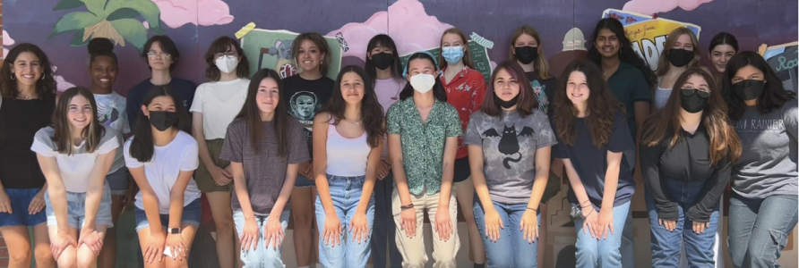

Background
I joined the 28% Newsletter my freshman year of high school, hoping to aid in the newsletter's goal of promoting women in STEM. We created monthly newsletters that included interviews of women in the STEM field, articles about past female scientists, and more!
In 10th grade, I created a website for this club with a team of four people. This website would allow the club to receive more subscribers to the newsletter and to promote their agenda.

The Team
On this project, I worked with three other students in my App Academy class. Our team consisted of two front-end designers and two back-end developers. All of us conducted research in order to better develop a website to meet the client's needs, and came up with an initial design.
My Role
I acted as a designer and front-end developer, coming up with color schemes, choosing fonts, putting together a cohesive layout using HTML and CSS.
Requirements & Needs
Our client wanted a website that would allow people to subscribe to receive the montly newsletter via email. We were also required to show all of past newsletters as well as more information about the club.
The Initial Design
I along with the other primary designer came up with a color scheme for the website as well as fonts to use. Then the team developed an initial prototype on figma.

We designed different versions of the website so that we
would have options to choose from. We wanted to create the best
user experience possible.
In order to make sure we acheived this, we held focus groups and conducted
research to see how our website's design was received by others.
But in terms of the color & typography choices, the team was
divided.

The designer explained she was trying to resemble the colors and style of a vintage newspaper. But other members argued that the colors should be more aligned with the newsletter brand colors - purples, blues, and greens. In a survey that our head of outreach posted on Instagram, the majority agreed to make the switch to a cooler color palette.
The Final Design
For the final design, we kept some of the features from the initial
design - such as the navigation bar, most of the navigation labels, and
the simple subscription form. We also kept the grid layout to display
past newsletters.
We did change the color scheme to a combination of purples and blues,
which better matched our other brand and social media materials. We
added an additional page for events and moved the subscription form to
the home page.
The website was built in HTML, CSS, and JavaScript. The form posts the
submitted emails to a google sheets, using a custom API built using the
platform SheetDb. The website is deployed through Vercel.
Take a look at the github repository here.